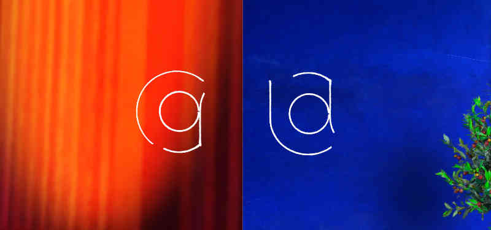
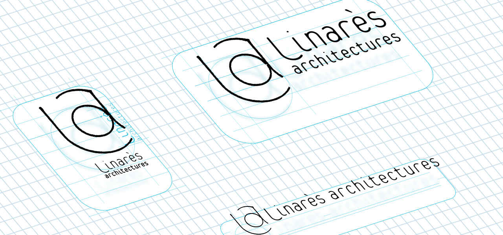

Linarès architectures est une agence de micro-projets, qui apporte une réflexion contextuelle pour des architectures adaptées et sur-mesure. Elle propose aussi, avec Carolina Garcia, du design d’intérieur et une spécialisation dans l’adaptation des locaux au handicap ou la vieillesse.
La création du site a été l’occasion de créer l’identité visuelle de l’agence.

Le monogramme reprend les initiales L-A et C-G., le « g » est le « a » inversé du premier pour créer cet effet de proximité.
Il est dessiné au trait, pour évoquer le plan d’architecte, le fait-main pour l’approche sur-mesure, et… pour une traduction approchante de lin(ar)es !
Selon l'utilsation prévue, le logo principal est décliné en plusieurs formats : le logo usuel pour la papeterie, le logo-signature sur les plans.

Le site internet reprend l'usage des lignes notament dans la série de pictos créés pour l’occasion. L’utilisation de seulement deux couleurs renforce l’effet de famille. Ces pictos sont destinés à illustrer l'ensemble des services que propose l'agence.
Les titres, quant à eux, sont composés en Raleway Light. Le site est actuellement en construction, ce qui n’a jamais fait peur à un architecte.